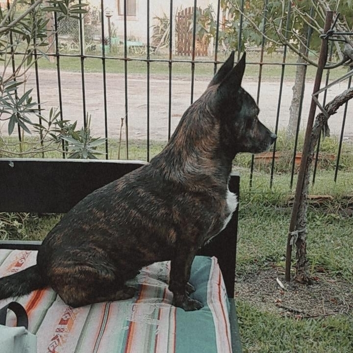

Tutorial: Como bañar a mi perra
Bañar a Eco pude ser un procedimiento difícil, lo importante es no desanimarse. Se recomienda hacer esto un día soleado, preferiblemente a la mañana y en el jardín.
Vamos a necesitar:
- Shampoo que compré en la veterinaria y me salio re caro, no se por qué hago estas cosas.
- Fuentón con augua caliente.
- Cepillo de perro
- Toalla
- Mucho tiempo libre
- Ropa feísima de entre casa (ya que nos vamos a mojar).
- Seres humanos: dos, a veces tres.
Procedimiento:
- En principio, se debe procurar reunir los materiales de la forma más silenciosa posible. De notar alguno de los objetos mencionados arriba, Eco se va a escoder en la casa del vecino.
- Mientras una persona prepara el agua caliente y llena el fuentón, la otra se encarga de llevar a Eco a la casa y mantenerla entretenida con trampas (comida o juegos)
- Para este momento es probable que Eco ya se haya dado cuenta del plan, por lo que seguramente corrió abajo de la cama. Hay que mover la cama y sacarla
- Levantar a Eco con cuidado y llevarla hasta el fuentón. Va a empezar a quejarse y a moverse pero si se la sostiene bien, desiste
- Usar el shampoo para limpiar bien el pelo teniendo cuidado con que no caiga sobre los ojos y enjuagar
- Una vez terminado el enjuague hay que envolverla en una toalla y secarla lo más posible.
- Una vez terminado el procedimiento, Eco va a salir corriendo y se va a ir a revolcar en la arena.
